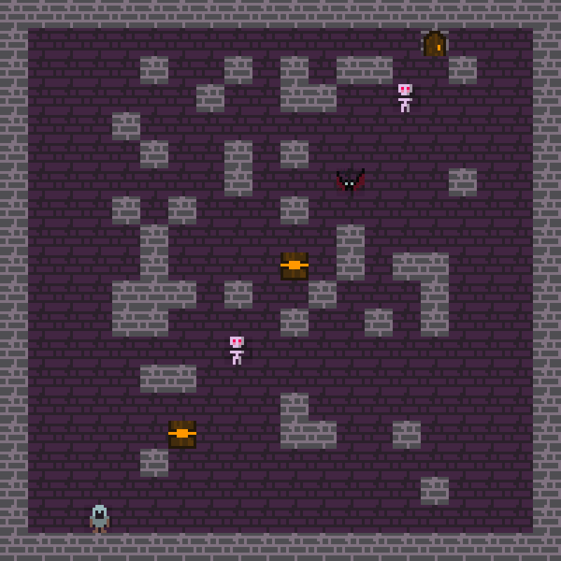

University group project · 2023 · archived
DungeonCrawler
A C++ dungeon crawler from a 2023 university group project, now also available here as a lightweight browser adaptation. It was built before AI tools became huge, which definitely shows — by today’s standards it’s a pretty rough little game.